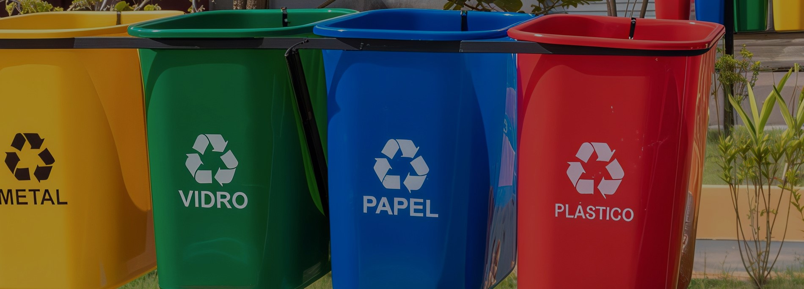

A Wyden é um grupo educacional fundado em 2009, que integra 11 instituições de ensino superior no Brasil, oferecendo mais de 100 cursos entre Graduação, Pós-Graduação e Mestrado. Reconhecida pela flexibilidade (Presencial, EAD, Semipresencial e modelos híbridos), destaca-se por programas internacionais com professores estrangeiros e parcerias para intercâmbio, além de orientação de carreira personalizada.
Com nota máxima no MEC, a Wyden possui 50 mil alunos ativos e infraestrutura moderna, alinhando teoria e prática desde o primeiro ano. Sua missão é entregar "a melhor experiência de aprendizagem" através de tecnologia e qualidade acadêmica, transformando vidas e fomentando o desenvolvimento regional.


Saiba um pouco mais sobre o projeto
A Wyden é um grupo educacional fundado em 2009, que integra 11 instituições de ensino superior no Brasil, oferecendo mais de 100 cursos entre Graduação, Pós-Graduação e Mestrado. Reconhecida pela flexibilidade (Presencial, EAD, Semipresencial e modelos híbridos), destaca-se por programas internacionais com professores estrangeiros e parcerias para intercâmbio, além de orientação de carreira personalizada.
Com nota máxima no MEC, a Wyden possui 50 mil alunos ativos e infraestrutura moderna, alinhando teoria e prática desde o primeiro ano. Sua missão é entregar "a melhor experiência de aprendizagem" através de tecnologia e qualidade acadêmica, transformando vidas e fomentando o desenvolvimento regional.
